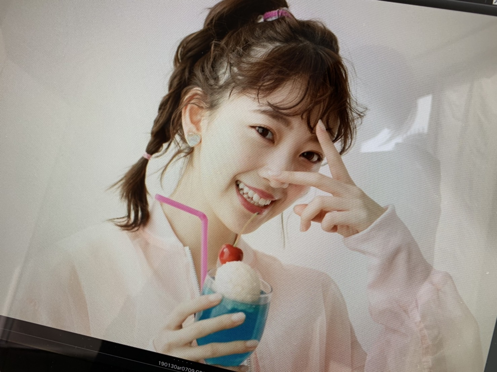
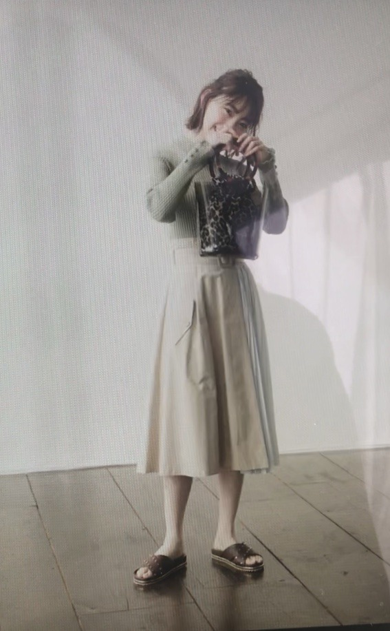

2019/0318Monあまいもの食べたい
最近無性に甘いものが食べたくて
家族でスーパーに行ってフルーツを大量買いしました。笑
いちご ザクロ メロン 文旦 梨...
う〜ん 早く桃の季節にならないかな〜

あ〜温泉行きたいな〜
ar発売中です！！
見てくれたかな？
茶髪ロングです〜次号からはショート

しゅわあまさん
ほろにがさん
どちらがタイプですか？✨


エクステ結んで地毛だけ残すとショート風。笑
最近はいろんな撮影や収録をしながら
アルバム制作をしています☺︎
諸々お楽しみに！
告知
3/23 B.L.T.
3/21(木)19:00〜22:00 テレビ朝日
「アメトーーク!ゴールデン3時間SP」
絵心ない芸人のコーナーに出させていただきました！ずっと見ていた大好きな番組に初めて参加させていただけて幸せです。私なりの画風で挑ませていただきました✨
3/21(木)20:00〜 TBS
「CDTVスペシャル！」
卒業シーズンスペシャルですが何を披露するかはお楽しみに！こちらもお見逃しなくです！
3/23(土)23:00～24:30 NHK総合
「#坂道テレビ ～乃木と欅と日向～」
齊藤京子ちゃんと小林由依ちゃんと料理をしたりお話しをしました✨人見知りあまり出てないといいな。笑

#みなみおな
#2人共大人になったね
#マイペース
では！！
2019/03/18 20:24
コメント(424)
好き。
ブログ更新ありがとうございます!
どんなファッションでも輝いて見えます!今後もお身体にお気を付けて、撮影や収録に臨んでください。
また、いつもレコメン聞いてます!ノリさんとの軽快なトークで聞いていてとても楽しいです!これからもよろしくお願いします!
アメトークなど、沢山の番組にご出演されるので必ず観たいと思います。いつも明るく面白い未央奈さん。これからも楽しませて下さい!!
どんなファッションでも輝いて見えます!今後もお身体にお気を付けて、撮影や収録に臨んでください。
また、いつもレコメン聞いてます!ノリさんとの軽快なトークで聞いていてとても楽しいです!これからもよろしくお願いします!
アメトークなど、沢山の番組にご出演されるので必ず観たいと思います。いつも明るく面白い未央奈さん。これからも楽しませて下さい!!
こんばんみーお♪
ブログありがとう！
名古屋の個握は欠席してしまい
ごめんね！！
久しぶりに寝込んでいた〜
風邪と花粉症で大量の薬が処方されていて
死んだように眠っていたよ〜
やっぱり、筋肉量の減少が
免疫力の低下に繋がっているように思う。。。
お父様を見習って頑張らねば！
ただ、花粉症は根本治療をしなければ
治らんよね〜
仕事で定期的な通院が困難なので
どうしたものか。。。。
。。。。
まあいいか？笑
最近、みなみおなだね〜♪
もしかして、ユニット曲とか！？
いろいろと考えてしまう☆
とりあえず、755のみなみおなのトークに
みなみが戻らんものかなぁ〜
みんな待っちょるけんね〜
みおから誘ってみたらし団子
では、今宵は早めに寝ます☆
まだ帰宅中だけどね〜
では、
おやすみおな〜♪
いい夢みおな〜☆
わたる⊿
ブログありがとう！
名古屋の個握は欠席してしまい
ごめんね！！
久しぶりに寝込んでいた〜
風邪と花粉症で大量の薬が処方されていて
死んだように眠っていたよ〜
やっぱり、筋肉量の減少が
免疫力の低下に繋がっているように思う。。。
お父様を見習って頑張らねば！
ただ、花粉症は根本治療をしなければ
治らんよね〜
仕事で定期的な通院が困難なので
どうしたものか。。。。
。。。。
まあいいか？笑
最近、みなみおなだね〜♪
もしかして、ユニット曲とか！？
いろいろと考えてしまう☆
とりあえず、755のみなみおなのトークに
みなみが戻らんものかなぁ〜
みんな待っちょるけんね〜
みおから誘ってみたらし団子
では、今宵は早めに寝ます☆
まだ帰宅中だけどね〜
では、
おやすみおな〜♪
いい夢みおな〜☆
わたる⊿
未央奈ブログ更新ありがとう
みなみおなの写真もありがとう！
いつか2人のユニット曲が見たいです！
みなみおなの写真もありがとう！
いつか2人のユニット曲が見たいです！
CDTVなに歌うかたのしみ！
アメトーークめっちゃ楽しみ
未央奈の画風が大好きです！！
体調崩さないようにしてね
未央奈大好きだよー
未央奈の画風が大好きです！！
体調崩さないようにしてね
未央奈大好きだよー
みなみおな見れるなんて最高！
最近乃木中でも横並びなの好きです！
最近乃木中でも横並びなの好きです！
みおな


ブログ更新ありがとうございます！
甘いもの食べたいときはお疲れのときですよ！
体調気をつけて、頑張りすぎないでくださいね！
甘いもの食べたいときはお疲れのときですよ！
体調気をつけて、頑張りすぎないでくださいね！
メロンの次の漢字が読めない。笑
みなみおな最高
みおなちゃんー！
ブログ更新してくれてありがとうございます！
ほんとみおなちゃん可愛すぎ！
私果物食べれないの多いんですけど
桃めっちゃ好きなんです！
美味しいですよねー！！！
これからも頑張ってください！
花粉に勝とうー！笑
ももか No.3（今回から笑）
ブログ更新してくれてありがとうございます！
ほんとみおなちゃん可愛すぎ！
私果物食べれないの多いんですけど
桃めっちゃ好きなんです！
美味しいですよねー！！！
これからも頑張ってください！
花粉に勝とうー！笑
ももか No.3（今回から笑）
まずい、まずい。早くみおなちゃんに
甘い物をあげないと、ご機嫌斜めに
なっちゃう。ってうそうそ。
文旦美味しいよね。すこし苦みがあっ
て大人の柑橘系って感じ。高知の水晶
文旦が特に好きです。
アルバム制作期間に突入したようです
ね。待ち遠しいです。
みなみおな、確かに大人になったけど
冷めることなく、気取りがなくなって
益々乃木坂を楽しんでいるところが
たまらなく可愛いです。
甘い物をあげないと、ご機嫌斜めに
なっちゃう。ってうそうそ。
文旦美味しいよね。すこし苦みがあっ
て大人の柑橘系って感じ。高知の水晶
文旦が特に好きです。
アルバム制作期間に突入したようです
ね。待ち遠しいです。
みなみおな、確かに大人になったけど
冷めることなく、気取りがなくなって
益々乃木坂を楽しんでいるところが
たまらなく可愛いです。
みおなちゃん大好きです。
これからも応援してます︎︎☺︎
これからも応援してます︎︎☺︎
堀ちゃんがアメトーーク!に出れる日が来るなんて感慨深いなぁ。楽しみです。みなみおなを見ているとほっこりします^ ^。花粉症辛いけど乗り切ろうね！
美術館巡りをして会得した堀ちゃんなりの画風、楽しみ！
甘いもの
ってフルーツなんですね。
新玉ねぎの季節がきましたよ～～
甘かった～～
次はナポリタンにでもしよう。
ピーマン抜きで！！！！！
(ピーマンは克服できませんでした。笑)
絵心ない･･･
芸人だったんですね(笑)
日時かぶってるけどね～
あ～～ダブルか～～
えっと～～
一番上･･･かな～～
ん？そこじゃない？？？
じゃあ～
一番下･･･
･･･
どれも素敵ですよ。
ってフルーツなんですね。
新玉ねぎの季節がきましたよ～～
甘かった～～
次はナポリタンにでもしよう。
ピーマン抜きで！！！！！
(ピーマンは克服できませんでした。笑)
絵心ない･･･
芸人だったんですね(笑)
日時かぶってるけどね～
あ～～ダブルか～～
えっと～～
一番上･･･かな～～
ん？そこじゃない？？？
じゃあ～
一番下･･･
･･･
どれも素敵ですよ。
ブログ更新ありがとうございます！！
私の家に今たくさんいちごがあります♡♡
いちごがいっぱいあるときはクレープを作ります！結構上手くできますよ！笑
温泉でいいところめっちゃあります！！！！
宮城の鳴子温泉は凄けおすすめですよ！！！
疲れもとれますし、足湯も手湯もあります！
長いお休みがあるときは鳴子温泉行ってみてください！
私の家に今たくさんいちごがあります♡♡
いちごがいっぱいあるときはクレープを作ります！結構上手くできますよ！笑
温泉でいいところめっちゃあります！！！！
宮城の鳴子温泉は凄けおすすめですよ！！！
疲れもとれますし、足湯も手湯もあります！
長いお休みがあるときは鳴子温泉行ってみてください！
見るンゴ
ブログ更新ありがとう！そしてみなみおなは最高！
男性ながらいつも未央奈のarを楽しみに
しています。これからも未央奈のこと応援してます！
これからも頑張ってください。
男性ながらいつも未央奈のarを楽しみに
しています。これからも未央奈のこと応援してます！
これからも頑張ってください。
みおな更新ありがとう〜♡
かわいいかわいいモデル風景もありがとう！！
そしてみなみおなありがとう！！！！！！！！！
ほんとこのふたり大好きすぎる！
ずーっと一緒にいるイメージある〜！
アメトークも観るよ！家族で笑う準備しておくね☆*°
cdtvなんだろう〜サヨナラの意味か帰り道は遠回りしたくなるだと思うけどなあ！！
個人的にななせちゃん推しでななせちゃんいない寂しい帰り道は遠回りしたくなるは少し辛いのもあるからサヨナラの意味とかも期待してる！！
けど、みおなめっちゃさいきん好きで来てるから、、推しメンになりかけてます！！帰り道は遠回りしたくなるでもへっちゃら！みおないればはっぴーだなあ！
かわいいかわいいモデル風景もありがとう！！
そしてみなみおなありがとう！！！！！！！！！
ほんとこのふたり大好きすぎる！
ずーっと一緒にいるイメージある〜！
アメトークも観るよ！家族で笑う準備しておくね☆*°
cdtvなんだろう〜サヨナラの意味か帰り道は遠回りしたくなるだと思うけどなあ！！
個人的にななせちゃん推しでななせちゃんいない寂しい帰り道は遠回りしたくなるは少し辛いのもあるからサヨナラの意味とかも期待してる！！
けど、みおなめっちゃさいきん好きで来てるから、、推しメンになりかけてます！！帰り道は遠回りしたくなるでもへっちゃら！みおないればはっぴーだなあ！
未央ちゃんブログまってたー☺︎
CDTVの髪型をたのしみにしてます ❤︎❤︎
❤︎❤︎
CDTVの髪型をたのしみにしてます
お疲れ様です。
木曜日はアメトークとCDTVを交互に観るという忙しいことになりそうです笑。
未央奈をたくさん見られて幸せだなぁ。
みなみおな大好きです！
木曜日はアメトークとCDTVを交互に観るという忙しいことになりそうです笑。
未央奈をたくさん見られて幸せだなぁ。
みなみおな大好きです！
告知あざっす。
未央奈ちゃんブログ更新嬉しいです！
相変わらず透明感のある肌だね。羨ましいわ笑笑
みおみおなの写真とか最高かよ！
未央奈ちゃんが出る番組めちゃめちゃ楽しみです！もちろん全部見るよ！
身体に気をつけて頑張ってね！
相変わらず透明感のある肌だね。羨ましいわ笑笑
みおみおなの写真とか最高かよ！
未央奈ちゃんが出る番組めちゃめちゃ楽しみです！もちろん全部見るよ！
身体に気をつけて頑張ってね！
未央奈さん
こんばんは
ブログ更新ありがとうございます
甘いもの食べたくなる気持ち
すんごいわかります
早く旬なフルーツ食べたいですよね
こんばんは
ブログ更新ありがとうございます
甘いもの食べたくなる気持ち
すんごいわかります
早く旬なフルーツ食べたいですよね
ブログ更新ありがとうございます！
アメトークめっちゃ楽しみです！
アメトークめっちゃ楽しみです！
チャァオ～～!☆彡
みおちゃん:「う〜ん 早く桃の季節にならないかな〜」
・・・・
(小さい声でぇ)・・・・
だから～～～⤴️⤴️
だから～～～～⤴️⤴️・・
みおちゃ～～～ん❕❤️❤️❤️・・
３期生に～～～⤴️⤴️・・
桃ちゃんがぁ～～～⤴️⤴️⤴️・・
いるでしょ～～⤴️⤴️❕❤️❤️❤️❤️❤️笑顔
☆大人しい、おすまし！より☆彡
未央奈ーー！！
いつみてもかわいいいいい！！！
アメトークすごく楽しみにしてる笑
応援してるよ～～
いつみてもかわいいいいい！！！
アメトークすごく楽しみにしてる笑
応援してるよ～～
ブログ更新ありがとう
いつも応援してます❗️
いつも応援してます❗️
みなみおな♡
みおな、こんばんは(^_^)
アメトーーク！とCDTVメチャクチャ楽しみ＼(^o^)／
みおなが、どんな絵を描いたのか、楽しみ過ぎる！
絵を描く企画は、乃木中でもまたやって欲しいな(^_^)
CDTVでは、どの曲をパフォーマンスするのか、楽しみ＼(^o^)／
坂道テレビも楽しみ！必ず見るからね＼(^o^)／
今週は、楽しみが多いな(^_^)
しゅわあまさん、ほろにがさん、どっちと言うか、みおなが可愛い！
それじゃ、またね(^o^)／
アメトーーク！とCDTVメチャクチャ楽しみ＼(^o^)／
みおなが、どんな絵を描いたのか、楽しみ過ぎる！
絵を描く企画は、乃木中でもまたやって欲しいな(^_^)
CDTVでは、どの曲をパフォーマンスするのか、楽しみ＼(^o^)／
坂道テレビも楽しみ！必ず見るからね＼(^o^)／
今週は、楽しみが多いな(^_^)
しゅわあまさん、ほろにがさん、どっちと言うか、みおなが可愛い！
それじゃ、またね(^o^)／
ミナミオナーーー！
ブログ更新ありがとう
堀ちゃん髪がショートも可愛い、ロングも可愛かったよ(^-^)
ホットギミック楽しみにしてますね
堀ちゃん髪がショートも可愛い、ロングも可愛かったよ(^-^)
ホットギミック楽しみにしてますね
みなみおな最高だね
しゅわあまいいね
今週はテレビでたくさん未央奈が見れるから楽しみだなぁ
しゅわあまいいね
今週はテレビでたくさん未央奈が見れるから楽しみだなぁ
未央奈ブログ更新ありがとう！
名古屋個別握手会5部だけだったけど、12月の大阪以来だったのに髪色変えたよね？！って言ってくれて覚えててくれて嬉しかったです。名古屋全国握手会もずっと未央奈行きます！よろしくね。
甘いもの食べたーわーい
みなみおな大人になったよー
名古屋個別握手会5部だけだったけど、12月の大阪以来だったのに髪色変えたよね？！って言ってくれて覚えててくれて嬉しかったです。名古屋全国握手会もずっと未央奈行きます！よろしくね。
甘いもの食べたーわーい
みなみおな大人になったよー
ありがとう。その日名古屋全握でハードスケジュールじゃん。でもどうにかして見よう。未央奈ちゃんおつかれさまでした。
堀ちゃんブログ更新ありがとう！
甘いもの食べたい時どうしてもチョコとかそういう系行っちゃうんだけどフルーツ好きな女の子はほんと推せちゃいます。桃はホントに美味しいよね！よくぞ生まれてきてくれたって感じ！
最近は堀ちゃんがたくさんテレビとか出てくれてウキウキしています。B.L.T.は多分買いますし、アメトークはもう録画済です！坂道テレビはリアタイしたいよね〜。人見知りしちゃダメな仕事ってこれだったのね、なんかスッキリしました笑
そう言えば堀ちゃんがモバメで言ってた「君は月夜に光り輝く」見てきたよ！動機は100%堀ちゃんです笑
悲しい状況なんだけど悲しさを感じさせない彼女と、どうしても楽しませてあげたい彼の思いやりっていうか。泣きかけたシーンもあったなぁ…
男ながらあの俳優さんめちゃくちゃイケメンだと思ったよ〜堀ちゃんが良いって言ってた作中の性格気にしてたんだけどあれは優しすぎますね堀先生。
これからすごい不安な時期でもあるんです。でもその道程に堀ちゃんが標識のようにキラキラ立っててくれる。そこを目指すために生きるぞ！頑張るぞ！ってなってます。堀さんが僕の道しるべです
また書きます！
甘いもの食べたい時どうしてもチョコとかそういう系行っちゃうんだけどフルーツ好きな女の子はほんと推せちゃいます。桃はホントに美味しいよね！よくぞ生まれてきてくれたって感じ！
最近は堀ちゃんがたくさんテレビとか出てくれてウキウキしています。B.L.T.は多分買いますし、アメトークはもう録画済です！坂道テレビはリアタイしたいよね〜。人見知りしちゃダメな仕事ってこれだったのね、なんかスッキリしました笑
そう言えば堀ちゃんがモバメで言ってた「君は月夜に光り輝く」見てきたよ！動機は100%堀ちゃんです笑
悲しい状況なんだけど悲しさを感じさせない彼女と、どうしても楽しませてあげたい彼の思いやりっていうか。泣きかけたシーンもあったなぁ…
男ながらあの俳優さんめちゃくちゃイケメンだと思ったよ〜堀ちゃんが良いって言ってた作中の性格気にしてたんだけどあれは優しすぎますね堀先生。
これからすごい不安な時期でもあるんです。でもその道程に堀ちゃんが標識のようにキラキラ立っててくれる。そこを目指すために生きるぞ！頑張るぞ！ってなってます。堀さんが僕の道しるべです
また書きます！
未央奈可愛いすぎ〜
次の個握行くよ！話すの楽しみ！！
これからも応援してるよ大好き( • •)
次の個握行くよ！話すの楽しみ！！
これからも応援してるよ大好き( • •)
ブログ更新楽しみにしてます！
可愛いですね♪
応援してます！
可愛いですね♪
応援してます！
みなみおな久しぶり！！
友達とみなみおな仲良しかな〜
って話してたところだった！良き◎
arかわゆいな〜世界観だいすき〜！
最近だいすきなmerが休刊なるらしくて
ショックうけてた…
電子化で大変だけど好きな雑誌はずっと
残っててほしいな〜と思いました！！
今週で今のお仕事おしまいからの
未央奈のお茶会だから頑張る〜☆
楽しみ！
ばいぃ
未央ちゃんこんばんは
文旦て何？ 知らない
温泉行きたいねぇ
みなみおな 久しぶりに見た気がする 相変わらず可愛いのぅ
ロングもショートも可愛いけど、やっぱポニーテールが一番萌え死ぬ
アメトーーク楽しみぃ
文旦て何？ 知らない
温泉行きたいねぇ
みなみおな 久しぶりに見た気がする 相変わらず可愛いのぅ
ロングもショートも可愛いけど、やっぱポニーテールが一番萌え死ぬ
アメトーーク楽しみぃ
文旦には砂糖をいっぱいかけて
冷蔵庫に半日くらい入れておくと
めちゃくちゃ美味しくなるよ！！
俺も大好きで毎日のように食べてた！
ぜひやって見て欲しいーー！
もし良かったら感想をブログに……
なんてのは冗談で笑
未央奈めっちゃ面白いし可愛いから
ずっと応援してるよー！
頑張ってー！！
にだいめはしくん！
珠美と梅と美月をよろしくね！
冷蔵庫に半日くらい入れておくと
めちゃくちゃ美味しくなるよ！！
俺も大好きで毎日のように食べてた！
ぜひやって見て欲しいーー！
もし良かったら感想をブログに……
なんてのは冗談で笑
未央奈めっちゃ面白いし可愛いから
ずっと応援してるよー！
頑張ってー！！
にだいめはしくん！
珠美と梅と美月をよろしくね！
みおなー！
お疲れ様！
昨日の握手会行ったよ！1.2.5部に行った！！
騙しちゃったりしてごめんね
けどみおなのこと好きだよ！
これから1年間イベント行けないけど応援しとるよ！
ちなみに
arのみおなはどれも好きだよ！
ではでは！
みおならしく頑張って
お疲れ様！
昨日の握手会行ったよ！1.2.5部に行った！！
騙しちゃったりしてごめんね
けどみおなのこと好きだよ！
これから1年間イベント行けないけど応援しとるよ！
ちなみに
arのみおなはどれも好きだよ！
ではでは！
みおならしく頑張って
堀ちゃん、こんばんわ。
しゃきーん☆ L( ￣▽￣)ノ
フルーツを大量買い・・・。
いちごとメロンがセットの時点で、お財布から野口英世さんが一斉に突撃ーーー！！、じゃなかった？？
下手すりゃ、諭吉の出番だ
写真いっぱいありがとー！
クリームソーダとのツーショットの写真の髪型はたぶん初めて見るかも。
よく似合っているね
・・・ふむふむ。
・・・えぇぇぇーーー！！
堀ちゃん、アメトークに出るのっ！？
ほ、ほ、ほ、ほ、堀ちゃん、やったね！
おめでとうございますます。
いよいよ堀未央奈の名前も本格的に芸能界に浸透していくのかな。
さんま御殿に出演した時が懐かしいね。
ＯＫ！楽しみにしてるね
『坂道テレビ』のほうも見るよ～。
『CDTVスペシャル！』のほうは、たぶん乃木坂４６が登場する前に待ちきれなくて心が折れるかも
しゃきーん☆ L( ￣▽￣)ノ
フルーツを大量買い・・・。
いちごとメロンがセットの時点で、お財布から野口英世さんが一斉に突撃ーーー！！、じゃなかった？？
下手すりゃ、諭吉の出番だ
写真いっぱいありがとー！
クリームソーダとのツーショットの写真の髪型はたぶん初めて見るかも。
よく似合っているね
・・・ふむふむ。
・・・えぇぇぇーーー！！
堀ちゃん、アメトークに出るのっ！？
ほ、ほ、ほ、ほ、堀ちゃん、やったね！
おめでとうございますます。
いよいよ堀未央奈の名前も本格的に芸能界に浸透していくのかな。
さんま御殿に出演した時が懐かしいね。
ＯＫ！楽しみにしてるね
『坂道テレビ』のほうも見るよ～。
『CDTVスペシャル！』のほうは、たぶん乃木坂４６が登場する前に待ちきれなくて心が折れるかも
みおな☆
17日おつかれさま！
そして、21日よろしくお願いします！！
地元名古屋で、週2回も乃木坂メンバーに会えること、この上ない楽しみです。
「アメトーク」、録画するね〜♬
21日が楽しみです☆
17日おつかれさま！
そして、21日よろしくお願いします！！
地元名古屋で、週2回も乃木坂メンバーに会えること、この上ない楽しみです。
「アメトーク」、録画するね〜♬
21日が楽しみです☆
堀ちゃんブログ更新ありがと！！
ほりちゃんときょんこの料理は楽しみすぎる。笑
これからも頑張ってください！
ほりちゃんときょんこの料理は楽しみすぎる。笑
これからも頑張ってください！
#みなみおな
のphoto、癒される〜♬
のphoto、癒される〜♬
こんばんは。ブログ更新ありがとうございます。
今日も可愛い写真いっぱいあざーす！！私はほろにが派ですね～。コーヒーもブラックが好きです。みなみおなも大人にはなったけど、可愛さは相変わらずですね！！
私もイチゴと桃が好きです。
ではまた。
今日も可愛い写真いっぱいあざーす！！私はほろにが派ですね～。コーヒーもブラックが好きです。みなみおなも大人にはなったけど、可愛さは相変わらずですね！！
私もイチゴと桃が好きです。
ではまた。


あまいものを食べたい時あるよね
自分もよく食べたい時がある…でも食べ過ぎちゃうと後悔しちゃう
1枚目の写真よきです♡(*´꒳`*)ﾖｷﾖｷ
今日も1日お疲れ様です!!ゆっくり休んでね♡おやすみ〜(*ˊ˘ˋ*)｡♪:*°